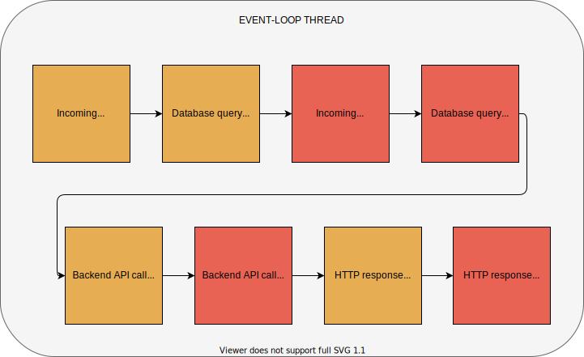
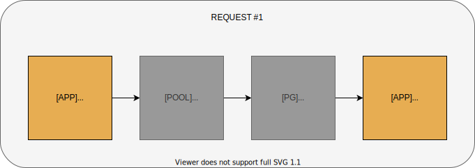

Hold my context!
Miroslav Bajtoš
What is context propagation?
Example API server
const app = require('express')();
const {queryProducts} = require('./db');
const {getRatings} = require('./ratings');
app.get('/products', listProducts);
function listProducts(req, res, next) {
const filter = /* build filter from req.query */;
queryProducts(filter, (err, products) => {
if (err) return next(err);
const prodIds = products.map(p => p.id);
getRatings(prodIds, (err, ratings) => {
if (err) return next(err);
res.json(/* build the response */);
});
});
}
Application Context
Correlation ID
User credentials
User permissions
Implicit Context
queryProducts called from listProducts
getRatings called from queryProducts callback
/products handler triggers SQL query
SELECT * FROM products
/products handler triggers HTTP call toGET /ratings
Thread-per-request model

Event-loop model

Early solutions
Domains
continuation-local-storage
Issues
Connection pools

Task queues
user-land Promise implementations
MySQL, pg-pool, MongoDB
Bluebird
No magic
Always reliable
Requires code changes
Does not solve the implicit context
AsyncLocalResource is finally here
(experimental in Node.js 14.x, stable from 16.x)
Code based on native Promises always preserves async context
(choose modern & actively-maintained dependencies) Consider explicit context propagation for critical information
(conditions leading to context corruption are tricky to detect)
Miroslav Bajtoš
slides: bajtos.net/C
Examples
Explicit context passing
function listProducts(req, res, next) {
const context = /* build from req */;
const filter = /* build filter from req.query */;
queryProducts(context, filter, (err, products) => {
if (err) return next(err);
const prodIds = products.map(p => p.id);
getRatings(context, prodIds, (err, ratings) => {
if (err) return next(err);
res.json(/* build the response */);
});
});
}
Pros
Cons
The quest
Async Hooks
Async Local Storage
Known issues
Take-aways
Thank you!
twitter.com/bajtos